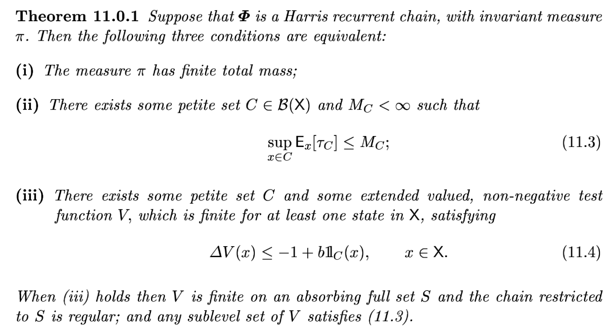
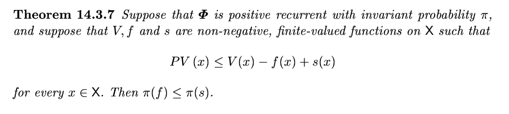
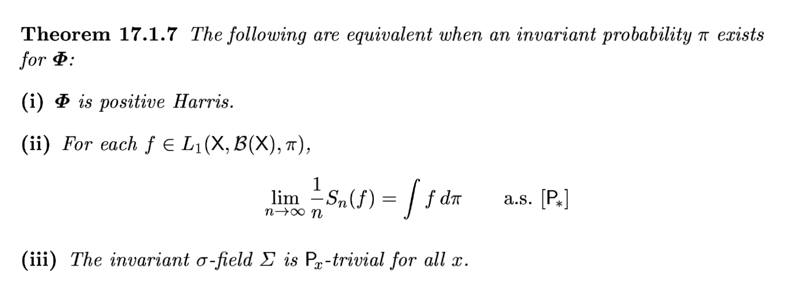
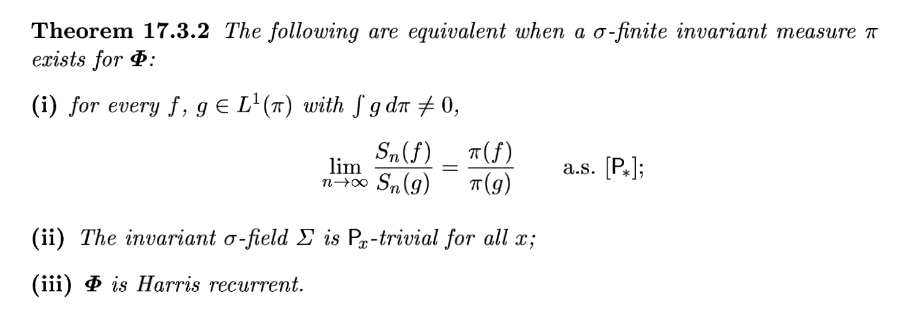

연구 ▷ HST ▷ 증명나만의언어로
부품정리




Thm3에서 우리가 보이고 싶은것은
\[\frac{SD_{ij}^2(t)}{t} \to c_{ij}\quad a.s.\]이다. 이를 위해서 우리는 Foster Thm을 사용한다. Foster의 Thm은 어떠한 마코프체인 \(\{MC_t\}\)가 적당한 조건을 만족할경우
\[\frac{1}{t}\sum_{k}^{t} g(S_k) \to \mathbb{E}[g(S_k)]\quad {a.s.}\]
임을 보여준다. 여기에서 \(g\)는 어떠한 함수이다. 우리는 \(g: {\cal X}^\star \to \mathbb{R}\) 를 아래와 같이 설정한다.
\[g(S_r^\star)= \Delta h_{ij}(t_r)^2\]
가정들
가정2 (5.2절)
결국에 Thm3에서 요구하는건 \(C_0\)가 \((P^\star)^\ell\)에 대해서 small set이라는 것임. 이건 일단 추후에 따지고 Lemma에서 보이고싶은건 \(C_0\)가 \((P^\star)^{m}\)에 대하여 small set이라는 점임. 이것은 100개든 1000개든, 무수히 많은 HST의 프로세스가 서로 다른 임의의 시작 \(s^\star \in C_0\) 를 고르더라도 정확하게 \(m\)-step 뒤에는 어떠한 상태들의 집합 ??에서 모이는 밀도하한이 있다는 의미이다. 이때 상태들의 집합 ??는 높이차집합과 노드집합의 곱으로 이루어진다. 편의상 노드집합은 \(v_n\)으로 고정하면 높이차집합만 고려하면 된다. 따라서
“~—-”
가 성립하도록 \(\bar{U} \times \{v_n\}, m, \eta\)를 직접 construct하면 증명이 끝난다. 이 조건은 결국 \(m\) 라운드 이후에 시작점은 반드시 노드 \(\{v_n\}\)에 있을것과 \(m\)라운드 이후이 높이차집합은 \(U\)에 있을것을 요구한다. 원래 small의 정의에는 \(U\)는 상태공간 \({\cal X}^\star\)의 부분집합이기만 하면 되는것이지 그 외적인 부분에 대한 특별한 제약은 없다. 그러나 우리는 편의상 아래를 \(U\)로 셋팅한다.
- \(U \approx 0\)
- 즉 \(U\) 내에서는 노드간의 높이 odering이 동일함. (tie를 피함)
1은 정말 아무이유없음. \(U\)가 다른점근처라도 상관없음. 단지 우리는 타겟을 잡기 편하게 하려고 그럼. (원점은 기억하기 쉬우니까)
2는 왜 동일해야할까?? 나중에 설명하겠다.
증명을 위해서는 아래와 같은 (살짝은 비 현실적인) 시나리오를 가정한다.
- 모든 fall event는 \(v_1, v_2, v_3, \dots, v_n\) 의 노드에 순서대로 떨어진다. 즉 \(X_{t_1} =v_1,X_{t_2}=v_2,\dots,\) 이다.
- 모든 fall event에서의 적립양만으로 \(m\)라운드 이후의 높이차를 \(\bar{U}\)를 구성한다.
- 모든 non-fall event의 적립양은 동일양으로 가정한다. (그래서 round가 끝나면 fall-node의 \(\dot{h}\) 만 바뀌어있고 나머지는 그대로이다.)
만약에 \(m\)을 \(n\)의 배수로한다면 \(\bar{U} \times \{v_n\}\) 중에서 \(\{v_n\}\)에 대한 이벤트는 확실히 일어나게 할 수 있다. 이제 \(U\)를 맞추는 것만 남았다. \(U\)를 맞추는 사건을 구성하는 것은 매우 쉬운데, non-fall event에서 모두 0이 적립되고 나머지 fall에서는 원하는 숫자로 정립하면된다. (예를들어 계속 \(b\)씩 만들다가, 마지막에 목표근처에서 \(b-??\)의 값으로 조정하면된다) 뭐가 되었든 이렇게 구성해도 확률이 0은 아니므로 이런식으로 하면된다. 그런데 이렇게 안하는 이유가 뭘까?
\(C_0\)의 \(s^\star\) 에 대한 공통의 bound를 만들기 위함 아닐까?
그렇다면 \(C_0\)에서 최악의 start를 선택하고 (\(C_0\)의 경계면 중 하나가 최악의 시작점) 거기에서 \(U\)를 원점근처로 적당하게 잡으면 된다. 고정된 \(U\)에 대해서 챔버의 중심을 목표로 맞추게 된다면 약간 오차가 생기면서 \(s^\star\)에서 출발한 애가 \(U\)에 도착할텐데 어디에서 출발하든 그 오차의 range가 동일하고. \(U\)에 도착할 하한값이 존재한다.